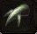
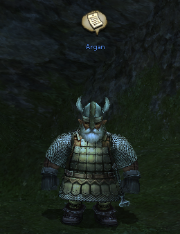
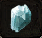

This quest have continuation. First quest opens the second one that allows upgrading your gear.
Quest I

Caruna in Confederation Road (C-7)
Need:
- 37 Level
NEED |
ITEM |
QT. |
|---|---|---|
|  | Splintered claw |
5 |
Sharp fang |
5 | |
Durable bone |
5 |
Info:
- Splintered claw - Bloody Bats Lv20, at night
- Sharp fang - Most snakes, e.g. Bibron's Boas Lv40, the Foothills of Mt. Jorito, H-7
- Durable bone - Skull Pulverizers Lv32, Nelstadt Plains (any time)(I-9) or Himurart Desert (night)(I-7).
Reward:
- 10000 gold
- 550000 xp
Quest II

NEED |
ITEM |
QT. |
|---|---|---|
|  | Light Crystal |
10 |
- After completing the first quest talk to Kaluna and the dwarf then go to your nation
- Now you need to receive the mail from Kaluna by finding the trigger spot
- Trigger spot Kingdom: I-4
- Trigger spot Confederation: E-11
- Trigger spot Empire: I-9
- Go talk to Kaluna
- Prepare 10 Light crystals for the Master beforehand (Drop in El Behd)
- Go to the Master (Nelstadt Plains G-10)
Reward:
- Gear upgrade service